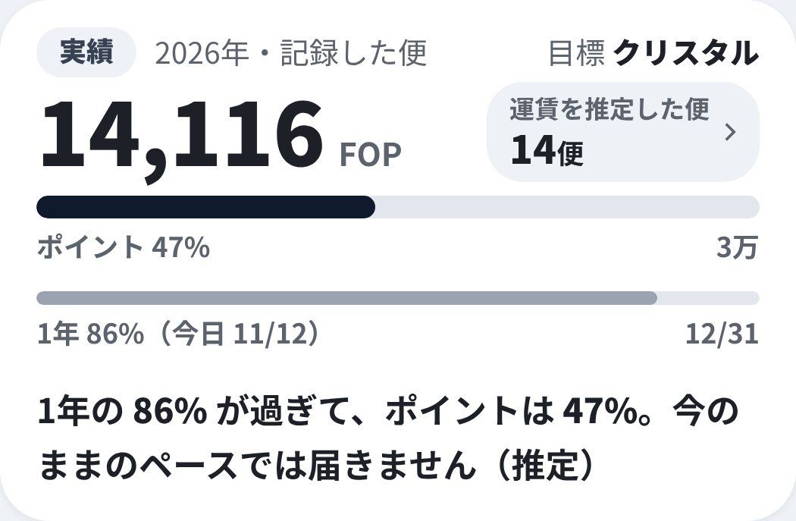
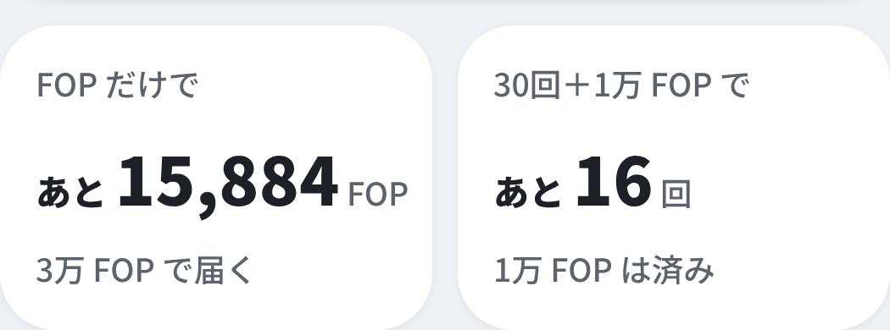
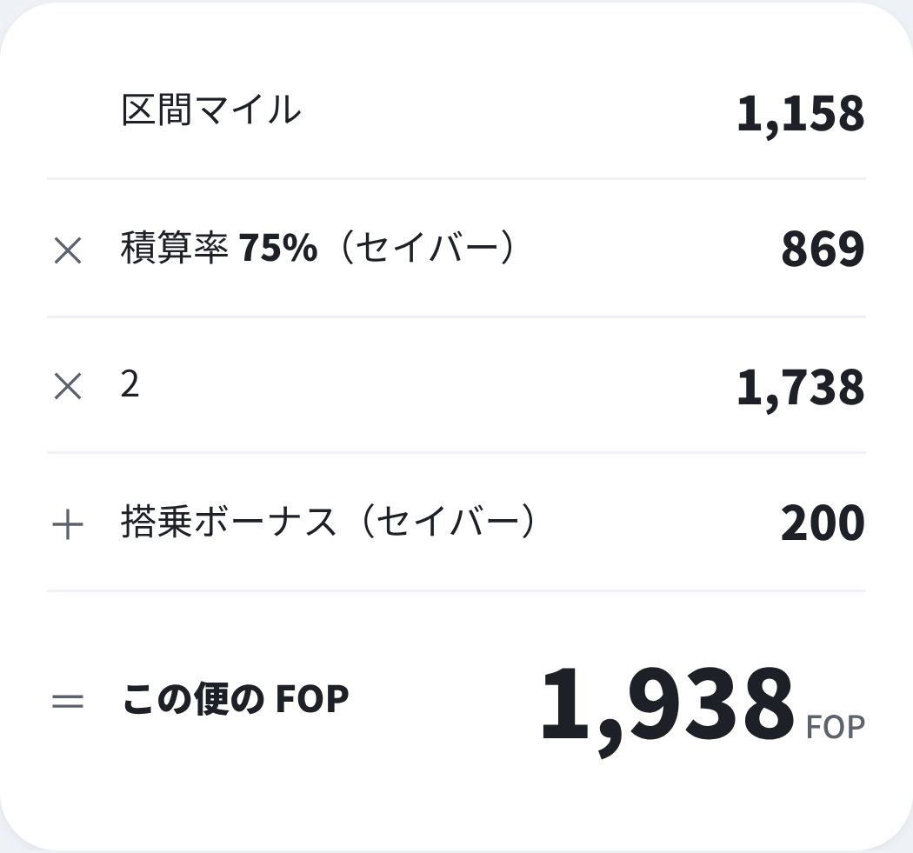
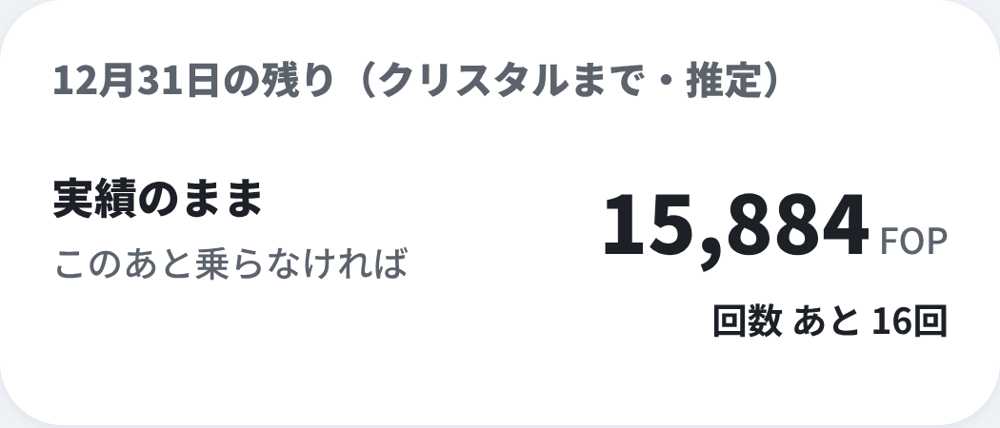
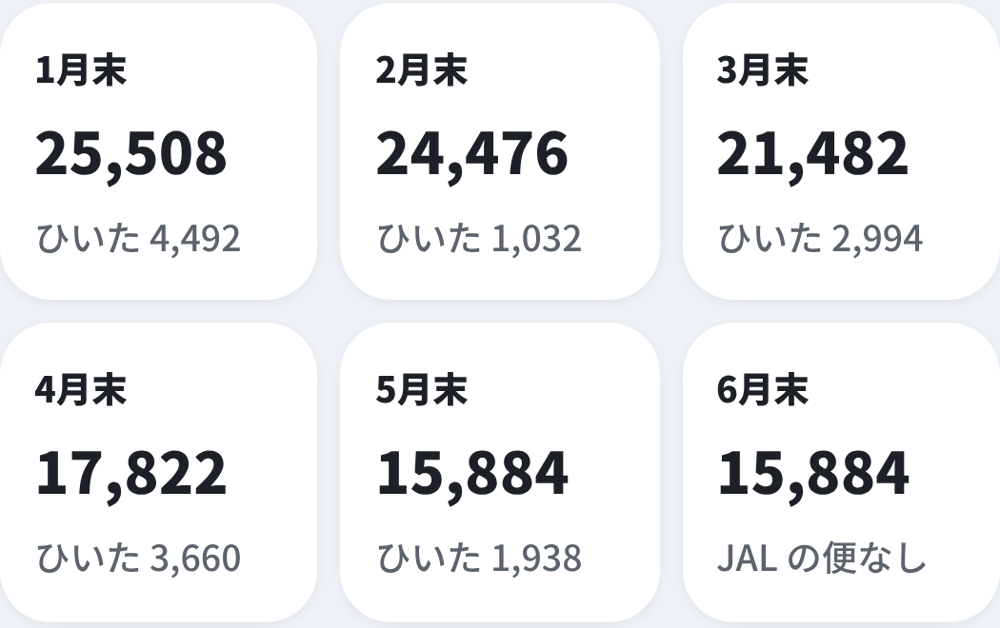
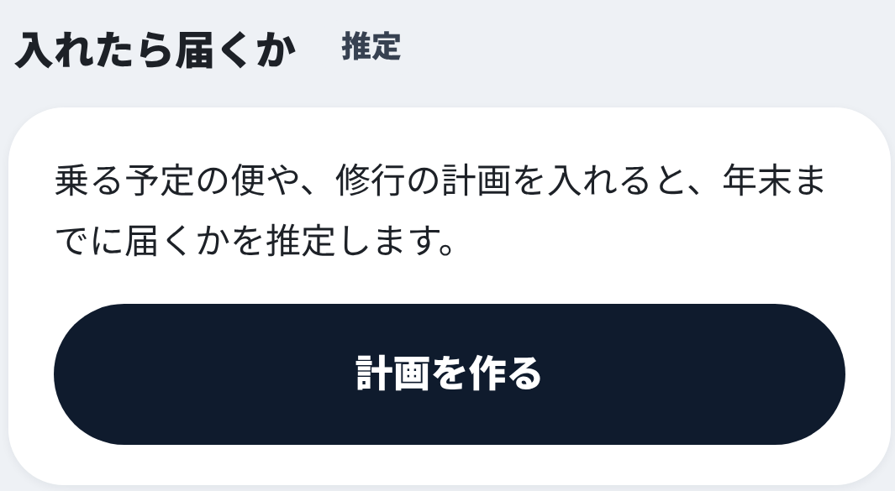

修行の広報（カルーセル6枚＋ストーリーズ1枚）
フィードは4:5（1080×1350）、ストーリーズは9:16（1080×1920）で png/ に書き出し済み。画面は main（本番と同じ版）のデモモードで撮ったもので、数字はデモの見本の記録です。
ステイタスを目指して乗る人へ
年末まで、
あと何回か。乗った便から、修行の道のりを数える。

数字はデモの見本。届くかは推定で、保証しません。
そらメモ非公式アプリ・デモの画面1/6
1 道のりの1枚
今のポイントを大きく。
届くかを一文で。1年が何%過ぎたかと並べて、推定で出します。
「運賃を推定した便」は、運賃が分からず、よく使われる運賃で数えた便の数です。
そらメモ非公式アプリ・デモの画面2/6
2 あと いくつ
ポイントだけの道と、
回数の道を並べて。FOP だけで届く道と、30回＋1万 FOP の道。近いほうが分かります。

ANA を選ぶと、プレミアムポイントの「あと」1つになります。条件は各社の公開情報（2026年10月に確認）から。
そらメモ非公式アプリ・デモの画面3/6
3 1便の内訳
1便ごとに、
数え方まで見える。区間マイル × 積算率 × 2 ＋ 搭乗ボーナス。

そらメモ非公式アプリ・デモの画面4/6
4 月ごと
12月31日の残りを、
月ごとにたどる。目標から、乗った月の分を順にひいていきます。


そらメモ非公式アプリ・推定・デモの画面5/6
5 計画を作る
予定の便を入れると、
届くかを推定。乗る前に、路線を入れて FOP・PP を確かめることもできます。

soramemo.jp
プロフィールのリンクから。推定は目安で、届くことを保証しません。
ステイタスの判定は各航空会社のものです。
そらメモ非公式アプリ・デモの画面6/6
修行中の人へ
今年の修行、
あと何回？そらメモの「修行」で、乗った便から数えられます。
ここに アンケートのスタンプ
（あと10回以内／まだまだ／来年から）
（あと10回以内／まだまだ／来年から）
ここに リンクのスタンプ
そらメモ非公式アプリ・推定・デモの画面